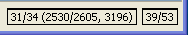
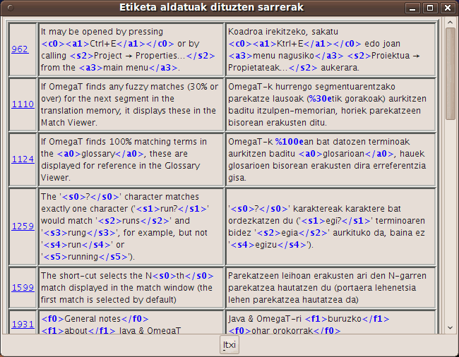

|
OmegaT-ren leiho nagusia |
menu nagusia, egoera-barra eta 3 panel dauzka: |
|
--- Editore-panela |
itzulpena tekleatu eta editatzen duzun lekua |
|
--- Parekatzeen bisore-panela |
itzulpen-memorietatik erauzitako segmentu antzekoenak erakusten dituena |
|
--- Glosarioen bisore-panela |
terminologiaren itzulpena erakusten duena |
|
Proiektuaren fitxategien leihoa |
|
|
|
|
|
|
|
Ondoko elkarrizketa-koadroak OmegaT-ren eta proiektuen ezarpenak aldatzeko erabiltzen dira. Beste atal batzuetan azaltzen dira denak. Ondoren, zertarako erabiltzen diren eta nola ireki daitezkeen azaltzen da.
|
|
|
|
|
|
|
|
|
|
Leiho nagusia hiru panelez, menu nagusiaz eta egoera-barraz osaturik dago. Panela bere izena dagoen tokitik arrastatuz, bere kokapena aldatu dezakezu, baita leiho berri bat sortuz desatrakatu ere. Panelaren egoeraren arabera, goiko ezkerreko izkinan ikur desberdinak agertu daitezke.
 panela ikonotzen du, bere izena soilik erakutsiz egoera-barraren ondoan.
panela ikonotzen du, bere izena soilik erakutsiz egoera-barraren ondoan.
 panelak leihoaren espazio osoa bete dezan eragiten du.
panelak leihoaren espazio osoa bete dezan eragiten du.
 panela ikonotu edo maximizatu baino lehen zegoen egoeran jartzen du.
panela ikonotu edo maximizatu baino lehen zegoen egoeran jartzen du.
 panela leiho nagusitik desatrakatzen du eta leiho berri bat sortzen du.
panela leiho nagusitik desatrakatzen du eta leiho berri bat sortzen du.
 panela berriro leiho nagusian atrakatzen du.
panela berriro leiho nagusian atrakatzen du.
Era berean, panelak bata bestearen gainean jarri daitezke. Kasu honetan, panelek fitxa bat erakutsiko dute goialdean. Fitxan klik eginez, panela aurreko planora eramango da. Panelen tamaina aldatu nahi izanez gero, beren arteko banatzaileak arrastatu egin daitezke.
Behean eskuinean dauden kontagailuek itzulpenaren aurrerapena adierazten dute:

| 31/34 | segmentu-kopurua - itzulitakoak / guztiak, uneko fitxategirako |
| 2530/2605 | segmentu bakarren kopurua - itzulitakoak / proiektuko guztiak |
| 3196 | segmentu-kopuru osoa (errepikapenak barne) proiektuan |
| 39/53 | karaktere-kopurua sorburuko segmentuan eta helburukoan |
Hemen itzulpena tekleatu eta editatzen duzu. Editore-panelak partzialki itzulitako dokumentuen testua honela erakusten du: itzulita dagoen testua itzulita erakusten du, eta itzuli gabe dagoen testua jatorrizko hizkuntzan erakusten du. Testua segmentuetan zatituta erakusten da, eta dokumentuan zehar mugi zaitezke edozein segmentutan klik eginez hura editatzeko. Goiko kasuan, jadanik itzulitako segmentuak ez dira esplizituki markatzen; hala ere, zure nahietara ondoen doitzen den konfigurazioa aukera dezakezu - esaterako, horiz marka ditzakezu (ikus Ikusi menua).
Segmentuetako bat segmentu aktiboa da. Bi atal dauzkan bakarra da: goiko aldea jatorrizko hizkuntzan dago, karaktere lodiz eta atzeko plano berdez idatzita, eta beheko aldea edizio-eremua da eta bi markatzailek mugatzen dute: ezkerreko markatzailea <segment nnnn> da, non nnnn segmentuak proiektuaren baitan duen zenbakia den, eta eskuinekoa <end segment> da. Goiko aldeak erreferentzia gisa balio du, eta beheko aldea itzulpena egiteko edo moldatzeko lekua da.
Editatu portaera koadroan ezarritakoa jarraituz, edizio-eremura mugitzen zarenean hura hutsik agertuko da, sorburu-testua edukiko du edo izultzen ari zaren antzekoena den itzulpena edukiko du. Beste segmentu batera mugitzen zarenean, itzulpena balidatu eta gorde egiten da. Segmentuak itzuli gabe geratu daitezen nahi baduzu, hustu edizio-eremua (hautatu dena Ctrl+A erabiliz eta ezabatu Del erabiliz). OmegaT-k itzulpena sorburuaren berdina izan dadin onartu dezake. Ezaugarri hau oso erabilgarria da ikurrak, izenak edo beste izen berezi batzuk dituzten dokumentuetan, edo itzulpena behar ez duten zatiak asko direnean.
Gai honetan gehiago sakondu nahi izanez gero, ikusi Itzulpenaren edizioa.

Hurrengo segmentura mugitzen zarenean, lehen parekatze lausoa (ehunekoetan parekatze-maila onena duena) automatikoki hautatzen da. Hautatutako parekatze lausoa letra lodiz nabarmenduko da, itzultzen ari zaren segmentuan falta diren hitzak urdinez eta falta diren zatien inguruan dauden hitzak <s3>berdez</s3>. Beste edozein parekatze hautatu dezakezu Ctrl+2, 3, 4, edo 5. sakatuz, eskuragarri dagoen parekatze-kopuruaren arabera. Noski, Ctrl+5 sakatzeak ez du ezer egingo, #5 parekatzerik existitzen ez bada. Hautatutako parekatzea zure itzulpenean erabiltzeko, sakatu Ctrl+R edizio-eremuko testuaren ordez parekatzea jartzeko edo sakatu Ctrl+I parekatzea kurtsorearen kokapenean txertatzeko.
Parekatze-ehunekoa -alegia, sorburu-segmentuaren eta parekatze-hautagaien arteko diferentziaren neurria- gutxi gorabehera kalkulatzen da, bi segmentuetan bat datozen hitzak hartuz eta segmentu luzeenaren hitz-kopuruarekin zatituz. Tokenizer plugin-a erabiliz gero, bi segmentuetako hitzen erroak erabiltzen dira. Bestela, hitzak dauden moduan uzten dira eta soilik puntuazioa, zenbakiak eta etiketak ezikusten dira. Azkenik, etiketak, zenbakiak eta puntuazio-zeinuak -lehen bi kasuetan ezikusi direnak- kontuan hartuta dauden diferentziak sar daitezke kalkuluan. Parekatzeen bisoreak hiru metrikak erakusten ditu hurrengo moduan:
<parekatzeen %, tokenizer plugin-a erabiltzen denean / parekatzeen %, OmegaT-ren balio lehenetsia erabiltzean / parekatzeen % etiketa, zenbaki eta puntuazio-markak barne>Goiko adibidean, lehen bi metrikak (46/46) berdinak dira tokenizatzailea ez delako erabili. Hirugarren ehunekoa (39) baxuagoa da ezberdintasunak daudelako puntuazioan eta etiketetan.
Fitxategi-izenik ez bada erakusten, proiektuaren itzulpen-memoria lehenetsia da sorburua. Segmentu umezurtzak (adibidean #1. parekatzea) proiektuaren itzulpen-memoria lehenetsian sorburu-segmenturik ez dauzkaten segmentuak dira. Goiko kasuan, jatorrizko esaldia, dagoeneko itzulia OmegaT-rekin, editatu egin da.
Glosario-panelari esker, zure adierazpideen eta terminologia berezien bilduma pribatua atzi dezakezu, horiek glosario-fitxategietna gorde ondoren. Uneko segmentuan aurkitutako terminoen itzulpenak erakusten ditu, baina erreferentzia gisa soilik, eta ez du onartzen termino berriak eta beren itzulpena txertatzea edo existitzen diren terminoak ordeztea.

Goiko adibidean sorburu-segmentua “In most translation jobs it is considered important to have the translated document look similar to the original.” zen, eta glosario-fitxategietan segmentu horretan ageri diren bi hitz aurkitu dira bertan, "document" eta "translation" hain zuzen. OmegaT-k hitz anitzeko terminoak onartzen ditu, baina oso azaletik: termino baten bi hitzak uneko segmentuan badaude, terminoa panelean erakutsiko da.
Hiztegiak MerriamWebsters, Duden, Larousse eta pareko paperezko hiztegien bertsio elektronikoak dira.
Google Translate aktibatuta badago Aukerak menuan, Google Translate panelak uneko segmenturako Google Translate zerbitzuak emandako itzulpena erakutsiko du, eta itzulpen hori segmentuaren helburuan txertatu ahal izango duzu.
Menu nagusitik OmegaT-ren funtzio guztiak erabili daitezke. Joan Menu nagusia eranskinera menuen eta menuetako elementuen deskripzioak ikusteko. Hala ere, gehien erabiltzen diren funtzioak lasterteklen bidez maneia daitezke. Lasterteklak erabiltzera ohitzen zarenean, ez duzu menuen beharrik nabarituko itzultzen ari zaren bitartean.
Egoera-barrak itzulpen-lanari lotutako mezuak erakusten ditu leiho nagusiaren behealdean. Barra honek OmegaT prozesatzen ari den eragiketa zehatzei buruzko mezuak ematen dizkio erabiltzaileari. Uneko segmenturako aurkitu diren parekatze lausoen eta glosarioko terminoen kopurua ere erakusten du.
Proiektuaren fitxategiak izeneko leihoak proiektuaren fitxategien zerrenda ematen du eta proiektuari buruzko beste datu batzuk erakusten ditu. OmegaT-k proiektu bat kargatzen duenean automatikoki erakusten da. Ixteko, erabili esc, irekitzeko edo aurrera eramateko, erabili Ctrl+L.
Ondoko informazioa erakusten da.
Proiektuaren fitxategi itzulgarri guztien zerrenda. Fitxategi hauek sorburu-fitxategien karpetan daudenak dira, baina ez denak, soilik OmegaT-k kudeatu ditzakeenak. Edozein fitxategiren izenean klik eginez, fitxategia ireki eta itzultzeko prestatuko du.
Editore-panelean irekita dagoen fitxategiaren izena atzeko plano urdinarekin nabarmenduta ageri da.
Fitxategi bakoitzaren segmentu-kopurua fitxategiaren izenaren alboan ageri da.
Proiektu osoak daukan segmentu bakarren kopurua.
Itzulita dauden segmentu bakarren kopurua. Segmentu bat itzultzen den bakoitzean eguneratzen da.
Segmentu bakarren kopurua kalkulatzeko, segmentu-kopuru osoa hartu eta segmentu errepikatu guztiak kentzen zaizkio. Maiuskulak eta minuskulak kontuan hartzen dira ("Bai" eta "bai" segmentu ezberdintzat hartzen dira).
"Segmentu-kopurua" eta "Segmentu bakarren kopurua" alderatuz, testuan dagoen errepikapen-kopuruaren ideia bat eduki dezakezu. Hala ere, zenbakiok ez dute adierazten errepikapenak garrantzitsuak diren ala ez: segmentuak askotan errepikatzen diren esaldi luzeak izan daitezke (ze zortea!) edo taula bat betetzen duten gako-hitzak (zorte gutxiago...). Zure proiektuaren /omegat karpetan dagoen project_stats.txt fitxategiak segmentuei buruzko informazio xeheagoa ematen du.
Segmentazio-arauak aldatuz, segmentu-kopurua eta segmentu bakarren kopurua ere aldatzen dira. Hala ere, aldaketa hori saihestu egin beharko litzateke proiektuaren itzulpenari ekin ondoren. Honetan gehiago sakondu nahi izanez gero, irakurri segmentazio-arauak.
Proiektu bati sorburu-fitxategiak gehitzeko, egin klik "Inportatu sorburu-fitxategiak..." botoia. Fitxategi hautatuak /source/ karpetara kopiatzen ditu eta proiektua birkargatzen du fitxategi berriak kargatzeko. Proiektu bati sorburu-fitxategiak gehitu dakizkioke Internetik, MediaWiki formatuan idatzita badaude, "Inportatu MediaWikitik" botoia klik eginez eta URL bat sartuz.
Proiektuko segmentu jakinak bilatzeko, bilaketa-leihoa erabili dezakezu. Bilaketa-leiho bat baino gehiago eduki daiteke irekita aldi berean. Beste leiho bat irekitzeko, erabili Ctrl+F leiho nagusian. Bilaketa-leihoak kateak edo gako-hitzak bilatzeko testu-eremu bat dauka, bilaketaren parametroak ezartzeko zenbait kontrol-lauki eta aukera-botoi, eta bilaketaren emaitzak erakusteko bistaratze-area bat.
Bilaketak bai sorburuan bai itzulpenean egiten dira. Bilaketak edozein karpetatan egin daitezke, baina kontuan izan OmegaT-k onartutako fitxategietan soilik egin ditzakeela bilaketak.
Bilaketa zehatzak * eta ? komodinak onartzen ditu, bai eta adierazpen erregularrak ere.
Bilaketa-eremuan kate bat sartu ondoren bilaketa-botoia sakatuz gero, bilatutako katea daukaten proiektuko segmentu guztiak erakutsiko dira.
OmegaT-k segmentu berdinak entitate bakar gisa kudeatzen dituenez, lehen segmentu bakarra erakusten da soilik. Markatu "Erakutsi emaitza guztiak" segmentu beraren agerraldi guztiak erakusteko. Bilaketa-leihoan erakusten diren segmentuen ordena, proiektuan daukaten ordena bera da. Itzulitako segmentuetan jatorrizko testua goian eta itzulitako testua behean erakutsiko dira; itzuli gabeko segmentuetan jatorrizko testua soilik erakutsiko da.
Segmentu batean klik eginez, editorea agertzen da segmentua aldatu ahal izateko. Aldaketaren ondoren, bilaketa-leihora itzul zaitezke eta aurkitutako hurrengo segmentuan klik egin hura ere aldatzeko. Mekanika hau oso erabilgarria da terminologiaren eguneraketak egiteko.
Etiketak balidatzeko leihoak itzulpenaren etiketa-akatsak detektatu eta zerrendatzen ditu. Leihoa irekitzeko, erabili Ctrl+T. Leihoak 3 zutabeko taula bat erakusten du, segmentura joateko esteka batekin eta sorburu- eta helburu-edukiekin:

Etiketak letra lodi urdinez nabarmendurik daude, jatorrizkoa eta itzulitakoa errazago alderatu daitezen. Egin klik estekan segmentua editorean aktibatzeko. Zuzendu akatsa, beharrezkoa bada, eta sakatu Ctrl+T etiketak balidatzeko leihora izultzeko eta akatsak zuzentzen jarraitzeko. Goiko lehen eta hirugarren kasuetan, etiketak ez dira bikoteka ondo jarri, eta bigarren kasuan hasierako etiketak ez dauka < ikurra.
Etiketa-akatsak itzulpenean zehar egindako etiketa-manipulazio okerrak dira, gehienetan etiketen ordena edo kopurua ez direlako errespetatu. Etiketak manipulatzea ona izan daiteke zenbaitetan, baina arazoak ekar ditzake itzulitako dokumentua sortzerakoan. Gehienetan etiketek jatorrizko testuan dagoen formatu-motaren bat ordezkatzen dute. Jatorrizko testuaren formatu-ezaugarriak sinplifikatuz, etiketa-kopurua txikiagoa izatea lortzen da.
Laguntza-arakatzailea (hain zuzen, eskuliburu hau erakusten duena) erakusteko, sakatu F1 edo joan menu nagusiko Laguntza → Erabiltzailearen eskuliburua... aukerara.
Leihoan, eskuliburuaz gain, bi botoi ikusiko dituzu: Atzera eta Edukiak. Erabiltzailearen eskuliburua, kapitulu ezberdinetara sartzeko estekak dituen HTML dokumentu bat da. Esteka batean sakatzeak hautatutako orria erakusten du, hain justu web-arakatzaile batean egingo zenukeen bezala.
Erabiltzailearen eskuliburua OmegaT-ren instalazio-karpetaren docs azpikarpetan dago. Beraz, euskarazko dokumentazioa ikusteko beste modu bat, docs/eu/index.hmtl fitxategia zure arakatzailean irekitzea da. Horrela, sareko beste toki batzuetara eramaten duten estekak ere ireki ahal izango dituzu, OmegaT-ren laguntza-arakatzaileak ez baitu uzten kanpoko orrietara joaten.
| Legezko oharrak | Orri nagusia | Aurkibidea |